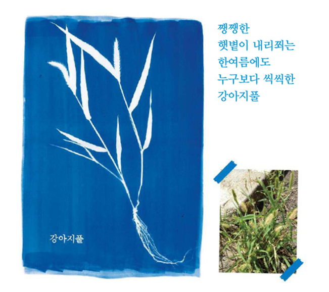

살펴 보기 ‘우리 마을 기록단’ 이야기
‘우리 마을 기록단’은 공간 만드는 사람, 영화 만드는 사람 등 다양한 사람이 모여 우리 마을만이 가진 개성 있는 소리, 풍경, 이야기 등을 여러 가지 방법으로 기록하는 단체예요. 다음 기록물을 보고 이 마을에는 어떤 특징이 있는지 알아봅시다.

강아지풀이네!
정답
‘우리 마을 기록단’은 공간 만드는 사람, 영화 만드는 사람 등 다양한 사람이 모여 우리 마을만이 가진 개성 있는 소리, 풍경, 이야기 등을 여러 가지 방법으로 기록하는 단체예요. 다음 기록물을 보고 이 마을에는 어떤 특징이 있는지 알아봅시다.
사진으로 기록해 봐.
정답
여러분이 마을 기록단이라면, 우리 마을을 어떻게 기록하고 싶나요?
내가 기록하고 싶은 마을의 모습을 적어 보세요.
ㆍ다양한 맛집을 그리고 싶어요.
ㆍ우리 동네의 동물을 기록하고 싶어요.
ㆍ우리 마을에 있는 다양한 길의 모습을 기록하고 싶어요.
예시 답안